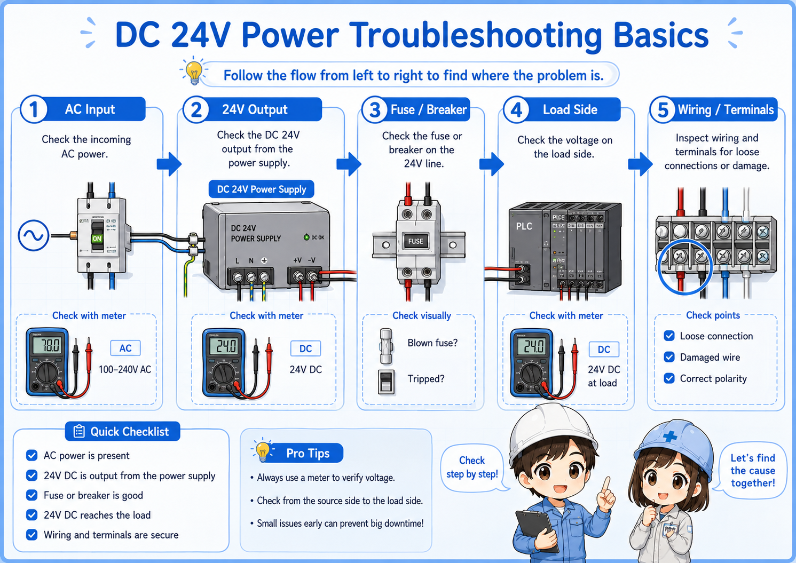
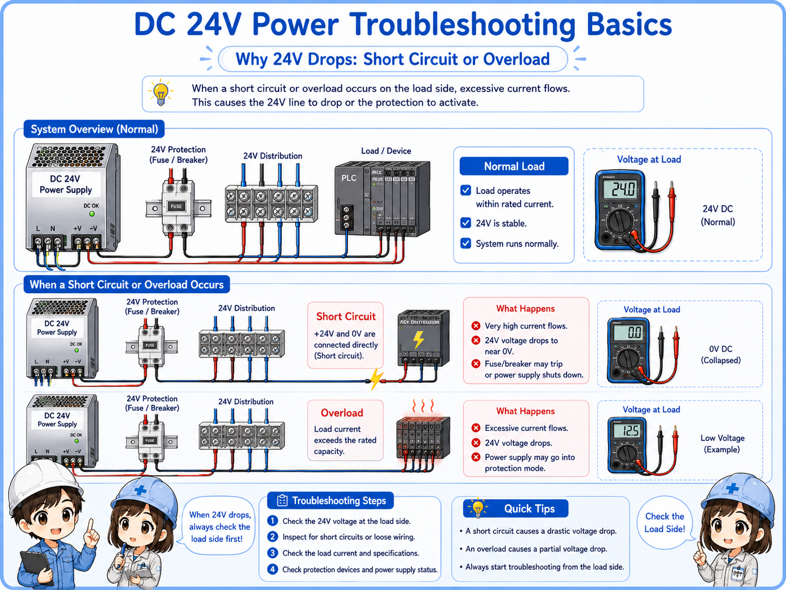
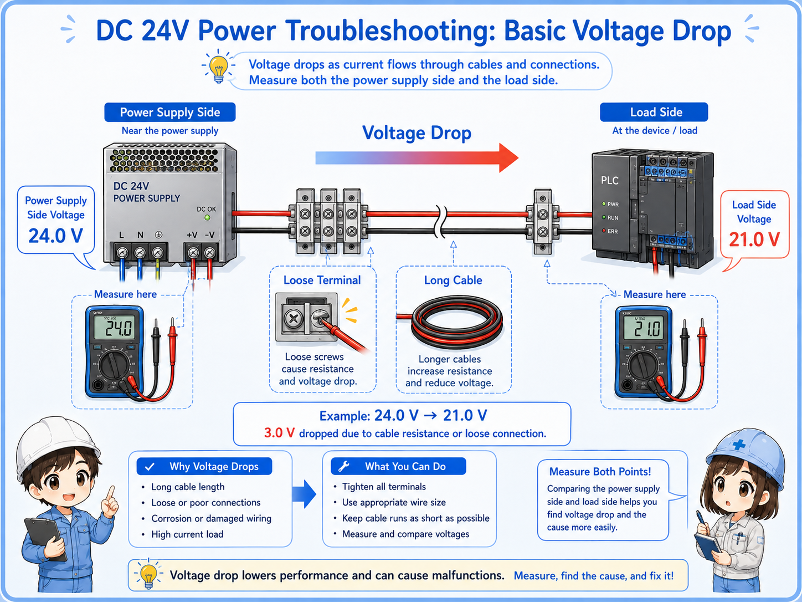

What does “24V power drops” mean?
In the field, “24V drops” can mean several different situations. Separate them before troubleshooting.
A DC 24V control power problem is not always a broken power supply. The voltage may be completely missing, low only when a load is connected, unstable for a moment, or missing only at a remote device.
The important point is to avoid guessing. Start by separating the problem into input power, power supply output, distribution wiring, and connected loads.
| Symptom | What it may mean | First check |
|---|---|---|
| No 24V output | The power supply may have no AC input, failed output, blown fuse, or protection state. | Measure AC input and DC output at the power supply terminals. |
| 24V drops when load is connected | The load may be too large, shorted, or wired incorrectly. | Check load side current, wiring, and short circuit possibility. |
| 24V is OK at supply but low at device | Voltage drop, loose terminal, broken wire, or bad common line may exist. | Measure voltage at both the power supply and the device side. |
| Intermittent 24V problem | Loose terminals, damaged cable, vibration, or unstable load may be involved. | Check terminals, cable movement, and when the voltage changes. |
Do not replace the power supply too early
A power supply can shut down to protect itself when a short circuit or overload exists. Replacing it without finding the cause may not solve the problem.
Basic check flow for DC 24V power problems
A simple check order prevents you from jumping back and forth between devices.
1. AC input
Confirm that the power supply receives the correct input voltage.
2. 24V output
Measure between +24V and 0V at the power supply output.
3. Fuse / breaker
Check protection devices and branch circuits on the 24V side.
4. Load side
Check whether a connected device or branch makes the voltage drop.
5. Wiring / terminals
Check loose terminals, damaged cables, and 0V common wiring.


When 24V is missing, do not start by replacing sensors. First find where the voltage disappears.

So I should compare the voltage at the power supply and at the device side?
Exactly. That comparison tells you whether the problem is at the source or somewhere in the wiring path.
How to measure 24V DC correctly
Most basic checks start by measuring between +24V and 0V with the meter set to DC voltage.
To check the output of a DC 24V power supply, measure between the positive output terminal and the 0V terminal. Measuring only one side, or measuring against the wrong reference point, can lead to confusing results.
Set the meter to DC voltage
Make sure the meter is not set to AC voltage, resistance, or current measurement by mistake.
Measure between +24V and 0V
Use the correct reference. Many 24V checks are unclear because 0V is not checked properly.
Compare source and device side
Measure at the power supply output and again at the device terminals.
Watch for voltage under load
Voltage may look normal with no load but drop when the device or branch is connected.
Helpful field habit
Write down the measured voltage and location: for example, “24.1V at power supply, 18.5V at sensor terminal.” This makes the problem easier to explain and trace.
Short circuit and overload: why 24V may collapse
If 24V drops when a branch or device is connected, the load side may be pulling too much current.
A short circuit creates an abnormal current path. An overload means the connected load is more than the power supply or branch circuit can handle. In both cases, the power supply may reduce output, shut down, or cycle on and off depending on its protection behavior.

| Problem | Typical behavior | What to check |
|---|---|---|
| Short circuit | Voltage drops suddenly, fuse may blow, or power supply protection may activate. | Check damaged cables, wrong wiring, crushed wires, and device terminals. |
| Overload | Voltage becomes low or unstable when several loads are connected. | Check total load current and power supply rated output current. |
| Incorrect device wiring | A newly connected sensor or actuator causes the 24V line to drop. | Check +24V, 0V, output wire, and manufacturer wiring diagram. |
Do not keep resetting protection without finding the cause
If protection repeatedly trips or the voltage repeatedly collapses, continuing to reset the circuit may damage devices or wiring. Find the abnormal branch first.
Voltage drop: when 24V is OK at the supply but low at the device
Voltage can be normal at the power supply and still be too low at the device side.
Voltage drop can happen because of long wiring, high current, loose terminals, poor crimping, damaged cables, or a weak 0V common path. In this case, the power supply itself may look normal, but the sensor, relay, or PLC input may not receive enough voltage.

Field-friendly check
If the power supply output is around 24V but the device side is much lower, move your measurement point step by step along the terminal blocks and wiring path.
Loose terminal
A loose screw or poor connection can create unstable voltage only when current flows.
Long cable
Long cable length and small wire size can increase voltage drop under load.
Shared 0V line
A weak or disconnected 0V common can make several devices behave strangely.
Load current
The voltage may be fine with no load but drop when the load actually turns on.
Common mistakes when checking DC 24V problems
Many troubleshooting mistakes come from checking only one point or assuming one device is bad too early.
| Mistake | Why it causes confusion | Better approach |
|---|---|---|
| Checking only +24V | The 0V side or common wiring may be the real problem. | Always measure between +24V and 0V at the point you are checking. |
| Replacing sensors first | Several sensors may stop because the shared 24V supply is missing. | Check the shared power supply and distribution before replacing devices. |
| Measuring only with no load | The voltage may look normal until a load is connected. | Check what happens when the device or branch is actually connected. |
| Ignoring terminals | Loose terminal blocks and poor crimps can cause intermittent faults. | Check terminal tightness, wire condition, and the actual wiring path. |
Best beginner rule
Do not ask “which part is broken?” first. Ask “where does 24V disappear?” The second question leads to a much better troubleshooting path.
Safety notes before troubleshooting
A 24V circuit may look simple, but it is still inside a control panel that can contain dangerous voltages.
The input side of a DC 24V power supply may be AC100V, AC200V, or another power voltage. Even if the output side is 24V DC, short circuits and incorrect work can damage equipment or cause unexpected machine behavior.
Follow the site rules, use proper lockout or isolation procedures when required, and only perform live measurements if you are qualified and permitted to do so.
Do not short terminals with meter probes
When measuring in a control panel, be careful not to bridge adjacent terminals with the probe tips. Use appropriate test probes and work slowly.